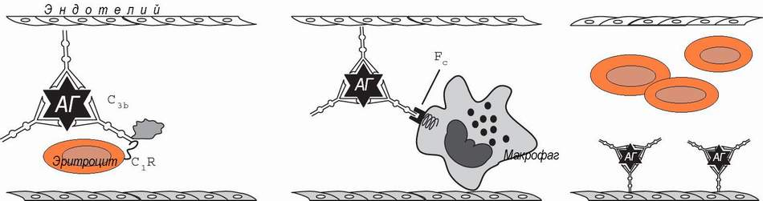
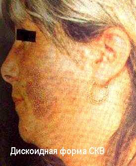
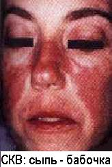
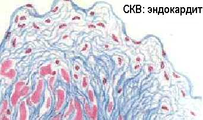
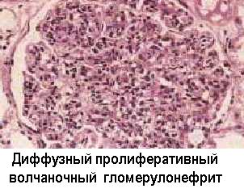
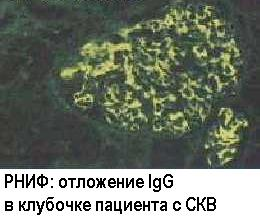
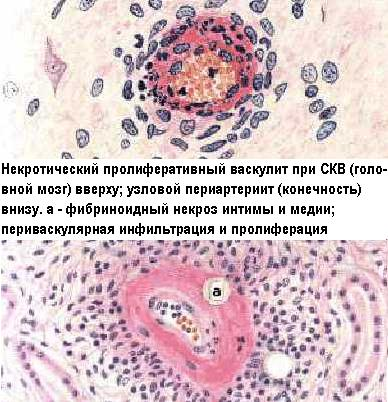

Иммунокомплексные реакции (Реакции III типа)
Аллергические реакции III типа опосредованы иммунными комплексами.
Иммунные комплексы образуются у всех индивидов при каждом иммунном ответе. Но лишь некоторые иммунные ответы и только у лиц, обладающих предрасположенностью к иммунокомплексным реакциям приводят к аллергическим заболеваниям III типа. Решающими являются особенности судьбы иммунных комплексов в организме.



По современным представлениям, иммунокомплексным реакциям способствуют наследственные и приобретенные дефекты в системе клиренса иммунных комплексов.
У приматов в этой системе ключевую роль играют эритроциты, комплемент и макрофаги.
В норме иммунные комплексы фиксируются эритроцитами, через С3в фрагмент комплемента и CR1 рецептор эритроцитов, что предохраняет их от контакта с сосудистой стенкой, так как основная часть красных кровяных клеток следует в осевом кровотоке.
В синусоидах селезенки и печени, при турбулентном кровотоке, нагруженные иммунными комплексами эритроциты захватываются макрофагами, при участии Fc-рецепторов. Некоторая часть свободных иммунных комплексов , отщепленных от носителей в результате действия фактора I комплемента, захватывается макрофагами непосредственно (Ф.Хэй, 1994).
По данным А.Я.Кульберга (1986), если иммуноглобулины принадлежат к классу IgA, они активируют комплемент альтернативным путём, что приводит к появлению в составе иммунных комплексов C3b - фрагментов комплемента. При классическом пути активации, если в состав комплекса входят IgG, они связывают C1q - фрагменты комплемента. C1q - фрагменты фиксируются нековалентно, а значит - обратимо, к Сg2-домену Fc-фрагмента IgG между аминокислотными остатками N 282 и N 292. После связывания антигена угловое расстояние в молекуле IgG между Fab-фрагментами возрастает. Fc-фрагмент выходит из плоскости, в которой расположены Fab-фрагменты. Это облегчает связывание C1q.
C1q по размеру в 2,5 раза больше IgG, поэтому его связывание приводит к экранированию части Fc-фрагмента, в связи с чем присоединение комплемент-активирующими антителами С1q мешает их захвату макрофагами (“интерференция эффекторных функций иммуноглобулинов” - по Кульбергу). В ходе дальнейшей активации комплемента,С3b-фрагмент, присоединяясь к комплексу ковалентно, в области Fd -участка Fab-фрагментов, вызывает стерические изменения комплекса, благоприятствующие отщеплению С1q и элиминации комплекса макрофагом. По Х.Такахаши (1980), присоединение С3b повышает растворимость иммунных комплексов, что может быть результатом отщепления C3b и С4b
В соответствии с этим, в норме в IgG-cодержащих комплексах присутствуют C3b и С4b и отстуствует С1q. Иммунные комплексы с IgM cодержат как C3b и С4b , так и С1q.
Из сказанного ясно, что приобретенные и наследственные дефекты и нехватка С3 и других фрагментов комплемента, Fc-рецептора макрофагов, СR1 - рецептора эритроцитов и самого Fc-фрагмента антител (включая его углеводный компонент) будут предрасполагать их носителей к иммунокомплексным болезням.
Это подтверждается наблюдениями о наличии повышенной частоты иммунокомплексных процессов у лиц с наследственным дефицитом С3 и с гипокомплементемией в результате эндотоксинового шока, ожоговой болезни и других процессов с избыточной активацией комплемента по альтернативному пути. Обнаружены генетические дефекты Fc-peцепторов и Fc-фрагментов у больных СКВ и их ближайших родственников (Т.Фрэнк и соавт. 1983). Описаны аутоантитела к конвертазе альтернативного пути комплемента - C3bBb-фрагменту, вызывающие дефицит C3b и мембранозно-пролиферативный иммунокомплексный гломерулонефрит II типа - “болезнь плотных отложений” (С.Р.Нусинов и соавт., 1985). Эти аутоантитела даже называют “нефритогенным фактором”.

...
...
...При подобных условиях время циркуляции иммунных комплексов в крови сокращено, так как они активно оседают на эндотелии и в тканях.
Итак, неустранение иммунных комплексов может отражать превышение скорости их продукции над доступными индивиду темпами их клиренса. Это происходит:
- из-за нарушения экспрессии или функционального дефекта рецепторов комплемента и/или Fc-рецепторов на клетках крови, адсорбирующих или фагоцитирующих иммунные комплексы
- из-за нарушения механизмов активации C3b-фрагмента комплемента, его дефицита или инактивации. Этот механизм особенно актуален при процессах, сопровождаемых истощающей активацией альтернативного пути комплемента. Так, при ожоговой болезни эндотоксиновом шоке, аллергоидных реакциях - возможен дефицит из-за его потребления. Распространены и наследственные дефициты факторов комплемента, участвующих в опсонизации иммунных комплексов (см. выше раздел “Медиаторы воспаления”).
- из-за образования комплексов, содержащих антиизотипические аутоантитела (ревматоидных факторов), из-за формирования антиидиотипических аутоантител, а также аутоантител к факторам комплемента (иммуноконглюттининов) или в присутствии кокковых белков, связывающих aнтитела через Fc-фрагменты (стафилококковый протеин А, cтрептококковый протеин М). В последнем случае играет роль гомология этих белков и Fc-фрагментов и антиидиотипическое копирование (П.Кристенсен, А.Шрёдер, 1990)
В этой связи необходимо подчеркнуть важность правильной трактовки результатов определения концентрации циркулирующих иммунных комплексов (ЦИК) в крови. Вопреки распространённой упрощённой интерпретации, высокий уровень ЦИК совсем не означает высокого риска иммунокомплексного заболевания. Гораздо важнее, что при интенсивном развитии иммунокомплексной аллергии этот уровень снижается в динамике, так как комплексы откладываются на сосудистых стенках. Определение иммунных комплексов в сыворотке по их взаимодействию с несущими Fc-рецептор клетками Раджи - это не единственный метод лабораторной диагностики иммунокомплексных реакций. С этой целью применяют также иммуноморфологический анализ ( светомикроскопическую визуализацию комплексов и компонентов комплемента в тканях с помощью иммунофлюоресценции по Кумбсу, а также электронномикроскопическое обнаружение депозитов иммунных комплексов). Косвенную роль играет и определение сывороточного уровня и степени утилизации факторов комплемента, как мера его активации (Р.Паттерсон, 1972).
Немалое значение для определения потенциальной патогенности иммунного комплекса имеют и его размеры, и другие физико-химические свойства.

Хотя, принципиально все классы антител способны к образованию иммунных комплексов, наиболее часто поражения содержат депозиты IgG, IgM и IgA. Так как последние не связывают комплемент классическим путём и не фиксируются к эритроцитам, они часто обусловливают значительные депозиты в легких, мозге и почках. Депозиты с участием иммуноглобулинов А ответственны за развитие ряда тяжёлых гломерулопатий. При болезни Бергера депозиты, содержащие IgA, откладываются в мезангии клубочков и вызывают пролиферацию его клеток и гломерулосклероз. Сходные процессы отмечаются при пурпуре Шёнляйн-Геноха. Отложения IgA находят в клубочках и при подостром злокачественном гломерулонефрите с полулуниями, и при очаговом гломерулонефрите. Во всех случаях это сопровождается клиническими проявлениями нефротического синдрома. Интересно, что в IgA-зависимые иммунокомплексные гломерулопатии могут обостряться на фоне острых респираторных вирусных инфекций, вероятно, за счёт гиперпродукции IgA. IgE могут активировать комплемент лишь в очень больших дозах и по альтернативному пути, однако, если в состав иммунных комплексов входят IgE, то облегчается их прочная фиксация на базофилах и мастоцитах, с последующей дегрануляцией этих клеток.
В тоже время, в отличие от анафилактических реакций, для иммунокомплексных реакций необходима значительно более высокая концентрация антител, способность которых специфически связываться с тканями не имеет решающего значения.
В общем, комплексы крупного размера легче и быстрее устраняются из циркуляции эритроцит-макрофагальным механизмом, хотя до исследования этого вопроса иммунологи, с позиций “здравого смысла”, ожидали обратного.
Такие иммунные комплексы, образовавшиеся в зоне эквивалентности, или при избытке антител, не вызывают патологических симптомов, напротив, иммунные комплексы, образовавшиеся при незначительном (но не сильном) избытке антигена, имеют малые и средние размеры, растворимы и могут обладать выраженным цитотоксическим действием. Ф.Хэй (1994) считает, что к отложению иммунных комплексов ведут, прежде всего, иммунные ответы с продукцией аномальных низкоаффинных антител. Именно такие иммуноглобулины возникают при многих аутоиммунных болезнях. Есть свидетельства облегченного образования иммунных комплексов при избытке синтеза антиидиотипических аутоантител у лиц с недостаточной идиотипспецифической супрессией.
Патологические симптомы, вызываемые цитотоксическими иммунными комплексами, обусловлены повреждающим действием клеток и медиаторов воспаления. Активация комплемента в местах отложения иммунных комплексов приводит к повышению проницаемости кровеносных сосудов.
При иммунокомплексных реакциях активация комплемента иммунными комплексами ведет к продукции анафилотоксинов С5а и С3а, а привлеченные хемоаттрактивным действием иммунных комплексов макрофаги выделяют фактор некроза опухолей - ФНО, который настолько важен в механизмах реакций 3 типа, что антитела к нему значительно ослабляют их проявления. Считается , что он опосредует аттракцию нейтрофилов, а привлечение полиморфноядерных лейкоцитов еще более способствует развитию воспаления: не в состоянии фагоцитировать фиксированные в тканях комплексы, нейтрофилы дают экзоцитоз и выделяются протеолитические ферменты (катепсины, коллагеназа, эластаза), что вызывает дальнейшее разрушение собственных тканей.
Важную самостоятельную роль при иммунокомплексных реакциях играют тромбоциты, активируемые иммунными комплексами и запускающие такие неотъемлемые элементы гиперчувствительности 3-го типа, как тромбоз, фибринообразование и, через тромбоцитарные факторы роста, процессы клеточной пролиферации, фиброплазии и ангиогенеза, которые часто наблюдаются в исходе иммунокомплексных поражений, в частности, гломерулопатий.
Список заболеваний, в патогенезе которых участвует иммунокомплексный механизм аллергии очень обширен.
Растворимые иммунные комплексы могут возникать либо в кровотоке (антиген и антитела одновременно находятся в плазме крови) - в этом случае возникает обусловленный иммунными комплексами васкулит; либо в ткани, когда антиген введен туда, а антитела находятся в кровотоке. Происходит их встречная взаимная диффузия и соединение. В этом случае возникает реакция типа феномена Артюса. При отдельных болезнях наблюдаются оба варианта иммунокомплексной аллергии по отдельности, вместе и в комбинации с другими, например, цитотоксическими или ГЗТ-механизмами.
|
|
|
|
|
|